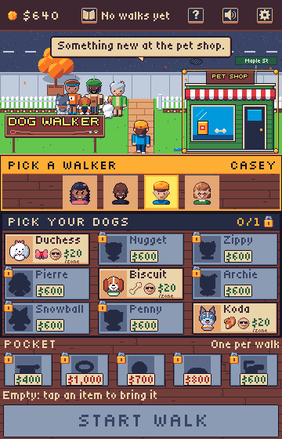
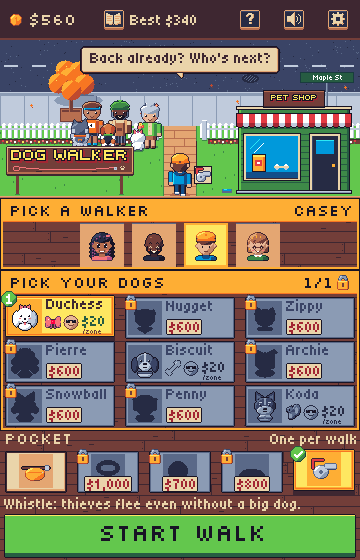
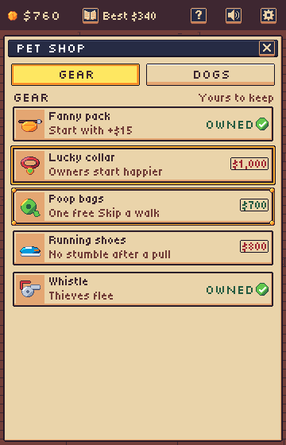
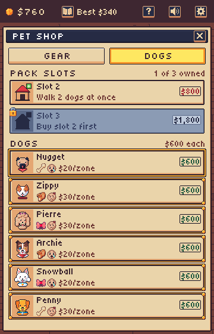
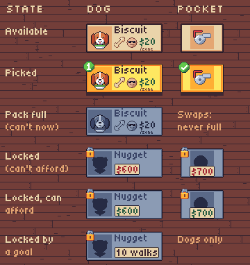

Start screen shop
Help, sound and settings sit together at the top right. The Gear section becomes the Pocket strip: every gear item as a small tile, one brought per walk and owned forever, like Hades' keepsakes. Gear, dogs and pack slots are bought in the Pet shop, a building in the gate scene. Walker and dogs stay the two steps; Start walk stays the one call to action. The Dogs band shows its count alone ("0/1", "1/1") beside the padlock that opens the shop's slots.
Start screen
The building replaces the slot sign on the yard's right lot. When something new is affordable it takes the gold ui-afford outline and the walker says "Something new at the pet shop." In the Pocket strip, tap an owned item to pocket it, or the pocketed one again to empty the pocket; a tap on another owned item swaps it in. Tapping a locked item opens the shop's Gear tab on it. The pocketed item also shows as a badge beside the walker.


Pocket strip geometry
The label, the tiles and the effect line do not fit in 44 rows. The strip needs 80, rows 433 to 512. That fits between the dog section (as live: y 270, 160 to 161 tall, cells 112x44 with no row gap) and Start walk (as live: 4,514 352x44), in the rows the Gear section used, so nothing else moves. Screen pixels unless noted.
| Element | Position and size | Look |
|---|---|---|
| Strip | Rows 433 to 512, on the wood | No frame or band: it is not a step |
| Label | "POCKET" at x 4, caps at y 434 (rows 434 to 443) | font-title 2x, cream (5.85:1 on the wood) |
| Hint | "One per walk" right-aligned at x 356, caps at y 434 | font-body 2x, cream |
| Cells | Five 64x44 hit areas from 4,450, 8 apart: x 4, 76, 148, 220, 292 (as live gearSlots), in shop order: fanny pack, lucky collar, poop bags, running shoes, whistle | |
| Tiles | 62x42, inset 1: at 5,451; 77,451; 149,451; 221,451; 293,451 | ui-tile: normal (owned), selected (pocketed), disabled (locked) |
| Box | 34x34 at tile 14,3 | tan, amber when selected, slate when locked |
| Item art | 32x32 item-* at tile 15,4 | Locked: a flat navy silhouette |
| Padlock | icon-lock at tile -2,-3 (locked only) | |
| Price plate | Centred on the tile, caps at tile y 28 (plate rows 25 to 39), over the box's foot (locked only) | Cream plate in a 1px ink edge, font-body 2x: forest when the bank covers it, darkRed when not; no gold outline here |
| Pocketed | Lifted 2px onto a plum shadow; ui-check tick at tile -3,-3 | The tick clears the label line by 1 row |
| Effect line | x 4, caps at y 499 (descenders to 512), up to 352 wide | font-body 2x, cream: "Whistle: thieves flee even without a big dog." or "Empty: tap an item to bring it" |
The shop page
The building opens the page under the top bar, so the bank stays in view. The Gear tab lists every item in shop order with its price or OWNED. The Dogs tab sells pack slots and dogs. A tapped locked item opens its tab with its row framed by ui-select. Other affordable rows take the gold outline, and a row you cannot buy yet is greyed with its reason. With every dog at $600, the whole dog list lights up at once.


Tile states
Locked is a flat navy silhouette in a grey tile, with the padlock at its corner and a price (or goal) plate. "Pack full" is the same grey tile with the art still readable (grey ramp, one step darker) and no padlock or plate. It is needed for dogs with two or three slots only: the Pocket is single-pick and swaps on tap, so its owned items stay normal. No dog unlocks by a goal today; the goal plate is for one that does.

What it needs
- New shipped art:
ui-pet-shop(120x104 at 234,90, tags normal and pressed, the board's letters baked in),screen-homeredrawn without the mailbox behind it, andicon-dog-slot(32x32, the doghouse with a plus). Locked silhouettes and the grey "pack full" art can be made in code, the waygreyTextureKeymakes grey cards. - Code:
- Top bar: help, sound and settings at x 240, 284 and 328.
- The Pocket strip above, replacing the Gear section.
- The slot sign removed; the Dogs band count without "PACK", beside a padlock that opens the shop's Dogs tab.
- Locked dog and gear tiles drawn as silhouette, padlock and plate.
- A tap on a locked item opens the shop on its row.
- The building's hit area, press dip and gold outline.
- A shop scene with Gear and Dogs tabs, rows and buying.
- The walker's line "Something new at the pet shop." the first time an item is affordable.